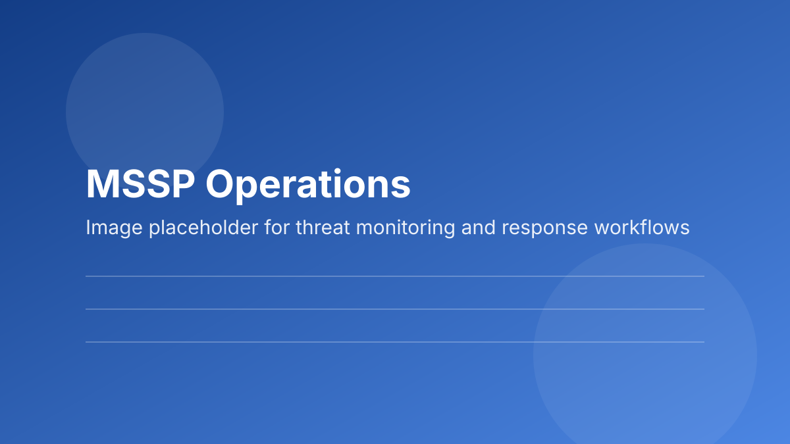

Where MSSP Programs Usually Stall
In many organizations, the security stack keeps growing while clarity does not. Teams can detect more events but still struggle to explain what changed in risk posture this week, what is being done about it, and what the business should prioritize next. That gap is where alert fatigue turns into leadership fatigue.
In my experience, clients do not need a longer dashboard. They need a cleaner signal. I coach teams to translate technical findings into decision-ready updates: risk movement, owner, action deadline, and expected business impact. That simple structure changes conversations quickly.
How I Build an Executive-Ready Security Rhythm
I start by tightening triage standards so analysts classify and escalate consistently. Then I align reporting to leadership questions, not tool outputs. The result is a predictable cadence where executives see fewer surprises and faster accountability.
I also anchor the operating model to recognized guidance such as the NIST Cybersecurity Framework 2.0, which helps teams map technical activity to governance and risk priorities. When this is done well, cybersecurity becomes easier to fund because leaders can see the connection between controls, exposure, and business continuity.